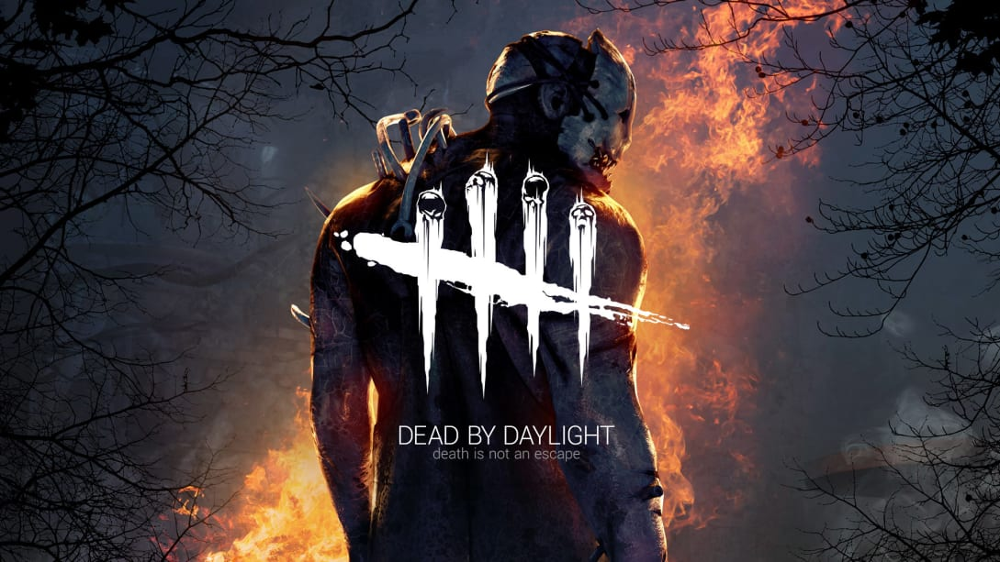
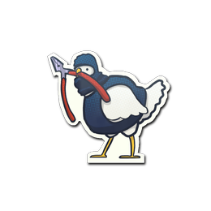

Counter-Strike: Global Offensive (or CSGO), is a fun competitive shooter game that you and your friends can play together. Most people play competitive which is a 5v5 30 round match, and the first team to 16 wins. There are other game options though in CSGO, which to find out more about it, you can click this LINK.
Dead by Daylight is a fun competitve game that involves teamwork to finish all 5 generators and escape before the killer has enough time to kill everyone. You are able to play as the killer, or you and 3 other teammates which are survivors, can go against the killer and try to escape. I mainly like to play as survivor, but you can find out more about Dead by Daylight by clicking this LINK.
To purchase CSGO on Steam, you can click this LINK. To purchase Dead by Daylight on Steam, you can click this LINK. To view Steam's other games, you can click this LINK.

Roblox is a child-friendly game that has thousands of different game options to be played. I mostly just played building games and some shooting games, but there are thousands of different types of games on Roblox. to visit Roblox's website, click this LINK.
To go back to the first page, click here.
